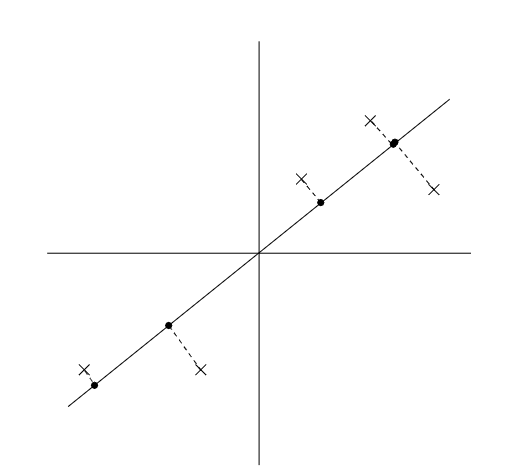

<!DOCTYPE html>


<html lang="zh-CN">


<head>
  <meta charset="utf-8" />
    
  <meta name="viewport" content="width=device-width, initial-scale=1, maximum-scale=1" />
  <title>
    PCA分析公式推导 |  VincereZhou&#39;s blog
  </title>
  <meta name="generator" content="hexo-theme-ayer">
  
  <link rel="shortcut icon" href="/images/mojie.jpg" />
  
  
<link rel="stylesheet" href="/dist/main.css">

  <link rel="stylesheet" href="https://cdn.jsdelivr.net/gh/Shen-Yu/cdn/css/remixicon.min.css">
  
<link rel="stylesheet" href="/css/custom.css">

  
  <script src="https://cdn.jsdelivr.net/npm/pace-js@1.0.2/pace.min.js"></script>
  
  

  

<link rel="alternate" href="/atom.xml" title="VincereZhou's blog" type="application/atom+xml">
</head>

</html>

<body>
  <div id="app">
    
      
    <main class="content on">
      <section class="outer">
  <article
  id="post-PCA分析公式推导"
  class="article article-type-post"
  itemscope
  itemprop="blogPost"
  data-scroll-reveal
>
  <div class="article-inner">
    
    <header class="article-header">
       
<h1 class="article-title sea-center" style="border-left:0" itemprop="name">
  PCA分析公式推导
</h1>
 

    </header>
     
    <div class="article-meta">
      <a href="/posts/fc532062/" class="article-date">
  <time datetime="2021-11-29T14:15:44.000Z" itemprop="datePublished">2021-11-29</time>
</a> 
  <div class="article-category">
    <a class="article-category-link" href="/categories/%E7%90%86%E8%AE%BA%E5%AD%A6%E4%B9%A0/">理论学习</a> / <a class="article-category-link" href="/categories/%E7%90%86%E8%AE%BA%E5%AD%A6%E4%B9%A0/%E6%9C%BA%E5%99%A8%E5%AD%A6%E4%B9%A0/">机器学习</a>
  </div>
  
<div class="word_count">
    <span class="post-time">
        <span class="post-meta-item-icon">
            <i class="ri-quill-pen-line"></i>
            <span class="post-meta-item-text"> 字数统计:</span>
            <span class="post-count">3.5k</span>
        </span>
    </span>

    <span class="post-time">
        &nbsp; | &nbsp;
        <span class="post-meta-item-icon">
            <i class="ri-book-open-line"></i>
            <span class="post-meta-item-text"> 阅读时长≈</span>
            <span class="post-count">12 分钟</span>
        </span>
    </span>
</div>
 
    </div>
      
    <div class="tocbot"></div>


  
    <div class="article-entry" itemprop="articleBody">
       
  <link rel="stylesheet" type="text/css" href="https://cdn.jsdelivr.net/hint.css/2.4.1/hint.min.css"><p>吴老师的CS229课程里讲到了PCA分析，但是感觉有些地方不清晰，查阅了一些资料，自己整理了一下。</p>
<span id="more"></span> 
<h1>特征值分解与奇异值分解</h1>
<p>首先我们需要了解一些特征值分解与奇异值分解的一些背景知识。</p>
<h2 id="特征值分解">特征值分解</h2>
<p>下面这段话全部来自于别人的文章<sup id="fnref:1"><a href="#fn:1" rel="footnote"><span class="hint--top hint--error hint--medium hint--rounded hint--bounce" aria-label="https://zhuanlan.zhihu.com/p/69540876
">[1]</span></a></sup></p>
<p>给定矩阵  的  个<strong>线性无关的特征向量</strong>，按列组成方阵，即:</p>
<p style=""></p><p>那么有</p>
<p style=""></p><p>其中  为特征值组成的对角矩阵，因为假设组成特征向量矩阵  的  个特征向量线性无关，所 以  可逆，从上式中就可以推导出对角化以及特征值分解的公式：</p>
<p style=""></p><p style=""></p><p>特征值分解的方法比较简单，有趣的是探究<strong>什么样的矩阵可以进行特征值分解</strong>以及矩阵进行特征值 分解之后展现出的矩阵有意思的性质。</p>
<p>下面这段话看不太懂，不清楚为什么<strong>对称矩阵就一定可以进行特征值分解，并且其特征向量是一个正交矩阵</strong>。</p>
<blockquote>
<p>我们来看下什么样的矩阵可以进行特征值分解呢，首先得是方阵，这个毫无疑问，不然就不存在特 征值，更不要说进行特征值分解了；回顾我们的假设： <strong> 个线性无关的特征向量</strong>，这一点尤为关键，因为我们在后续的过程中引入了特征向量矩阵的逆，不是线性无关的话就没有严格意义上的逆矩阵。泛泛地说呢，大部分维度为  的方阵都有  个线性无关的特征向量，具体说，当这个方阵 有  个不同的特征值，那么不同特征值对应的特征向量肯定是线性无关的，如果有重复的特征值呢，特征值重复的个数叫做代数重数，这时候就要进一步细致地看了，如果重复的特征值对应的线 性无关的特征向量数量 (几何重数) 和代数重数一致，那么整体来看，也是有  个线性无关的特 征向量的，如果不是呢，那么就不满足条件，无法进行特征值分解了。特殊的，<strong>考虑到复数特征值 的存在 (即矩阵反对称或接近反对称时)，当矩阵是实对称矩阵时，总是有  个线性无关的特征向量</strong>，而且<strong>特征向量相互正交</strong>，即特征向量矩阵  是一个正交矩阵，一般写作  ，也就是实对 称矩阵的特征值分解可以写作:</p>
</blockquote>
<p style=""></p><p>一般我们会把  的这  个特征向量标准化，即满足  ，或者说  。此时  的  个特征向量为标准正交基（正交基是元素两两正交的基，若基向量的模长度均为1，则称为标准正交基），满足  ，即 , 也就是说  为酉矩阵<sup id="fnref:2"><a href="#fn:2" rel="footnote"><span class="hint--top hint--error hint--medium hint--rounded hint--bounce" aria-label="https://www.cnblogs.com/pinard/p/6251584.html">[2]</span></a></sup>。</p>
<p><strong>证明：</strong></p>
<p style=""></p><p>最后，以一个需要注意而且容易混淆的地方时，我们的约束是  有  线性无关的特征向量，而 不是矩阵  本身是否满秩，矩阵  无论是否满秩都有可能有  个线性无关的特征向量。</p>
<h2 id="奇异值分解">奇异值分解</h2>
<p>下面这段话全部来自于别人的文章<sup id="fnref:3"><a href="#fn:3" rel="footnote"><span class="hint--top hint--error hint--medium hint--rounded hint--bounce" aria-label="https://zhuanlan.zhihu.com/p/26306568">[3]</span></a></sup></p>
<p>当给定一个大小为  的矩阵  ，虽然矩阵  不一定是方阵，但大小为  的  和  的  却是对称矩阵，可以进行特征值分解。若   ，  则矩阵   的奇异值分解为</p>
<p style=""></p><p>满足</p>
<p style=""></p><p>其中，矩阵  的大小为  ，列向量  是  的特征向量，也 被称为矩阵  的左奇异向量 (left singular vector) ; 矩阵  的大小为  ， 列向量  是  的特征向量，也被称为矩阵  的右奇异向量 (right singular vector) ; 矩阵  大小为  ，矩阵  大小为  ，两个矩阵对角线上的非零元素相同 (即矩阵  和矩阵  的非零特征值相同，推导过程见下) ; 矩阵  的大小为  ，位 于对角线上的元素被称为奇异值 (singular value)。</p>
<p>接下来，我们来看看矩阵  与矩阵  和矩阵  的关系。令常数  是矩阵  的秩，则  ，当  时，很明显，矩阵  和矩阵  的大小不同，但矩阵  和矩阵  对 角线上的非零元素却是相同的，若将矩阵  (或矩阵  ) 对角线上的非零元素分别为  （因为   ），其中，这些特征值也都是非负的（需证明  和  是半正定的，见下），再令矩阵  对角线上的非零元素分别为  ，则</p>
<p style=""></p><p>即非零奇异值的平方对应着矩阵  (或矩阵  ) 的非零特征值，到这里，我们就不难看出奇异值分解与对称对角化分解（特征分解）的关系了，即我们可以由对称对角化分解得到我们想要的奇异值分解。<br>
为了便于理解，在这里，给定一个大小为  的矩阵  ，虽然这个矩阵是方阵，但 却不是对称矩阵，我们来看看它的奇异值分解是怎样的。<br>
由  进行对称对角化分解，得到特征值为  ，相应地，特征向量 为 ; 由  进行对称对角化分解，得到特征值为  相应地，特征向量为  。取  ，则矩阵  的奇异值分解为</p>
<p style=""></p><p>如果  是一个<strong>对称方阵</strong>，则  ，此时左奇异向量和右奇异向量构成的矩阵也是相等的，即  。更为神奇的是，<strong>对称方阵的奇异值分解与特征分解结果相同</strong>，证明见下。</p>
<h3 id="证明：矩阵-A-A-T-和矩阵-A-T-A-的非零特征值相同">证明：矩阵  和矩阵  的非零特征值相同</h3>
<p>下面这段话来自网络<sup id="fnref:4"><a href="#fn:4" rel="footnote"><span class="hint--top hint--error hint--medium hint--rounded hint--bounce" aria-label="https://math.stackexchange.com/questions/1249497/largest-eigenvalues-of-aa-equals-to-aa
">[4]</span></a></sup></p>
<blockquote>
<p>For any  and  matrices  and , the nonzero eigenvalues of  and  are the same. Namely, if  with  and , then  （因为  ，如果 ，则 ，与原条件相悖，因此    ）and   ，即  同样为  的特征值，因此  和  的非零特征值相同。</p>
</blockquote>
<h3 id="证明：矩阵-A-A-T-和矩阵-A-T-A-半正定">证明：矩阵  和矩阵  半正定</h3>
<p>首先，证明   半正定 ，证明如下：</p>
<p style=""></p><p>同理，可证   半正定。</p>
<h3 id="证明：对称方阵的奇异值分解与特征分解结果相同">证明：对称方阵的奇异值分解与特征分解结果相同</h3>
<p>当  为对称方阵时， 。</p>
<p>假设  和  为  的一个特征值和相应的特征方程，此时存在：</p>
<p style=""></p><p>因此，  和  为  的特征值和特征向量。</p>
<p>因此，此时， 为特征分解的特征向量矩阵，而  为特征值组成的对角矩阵。也就是说，对称方阵的奇异值分解与特征分解结果相同</p>
<h1>PCA 预处理</h1>
<p>在使用PCA分析前，我们需要先进行<strong>特征缩放</strong>。</p>
<blockquote>
<ol>
<li>Let .</li>
<li>Replace each  with .</li>
<li>Let </li>
<li>Replace each  with .</li>
</ol>
</blockquote>
<p>前两步将均值改为 0，后两步将方差均调整为1，使得不同特征具有相同的取值范围 ( “scale”) 。如果你的特征本身就已经是范围一致，那就不用进行后两步，举个例子，假如你的输入特征是图像像素的灰度，那么你的特征取值都是  ，那么就不需要对范围做处理。</p>
<h1>PCA 直观解释</h1>
<p>吴老师说 PCA 分析结果可以有八九种解释的方式，但是我知道的只有两种。</p>
<p>第一种解释方式是找到一个超平面，使得样本点在这个超平面上尽可能分开，也就是投影点的方差尽可能大。如下图，叉形点是二维空间的样本点，我们想找到某个单位向量  ，使得数据投影到   方向的点的方差最大化。</p>
<p>第二种解释是我们希望所有的样本到这个超平面的距离足够近（所有样本点到超平面距离的平方和最小），对应着下图的虚线。</p>
<p></p>
<h1>推导第一主成分的方向</h1>
<p>这里就是说，如果我们就像上面图中一样，找一个单位向量  构成的一条直线方向，使得 数据投影到   方向的点的方差最大化。这里设样本数为  ，特征数为 ，我们知道给定一个单位向量  和某个点  ， 投射到  上投影点的长度为  （内积的性质）。我们上面提到了最大化投影点的方差，因此，我们需要最大化下式<sup id="fnref:5"><a href="#fn:5" rel="footnote"><span class="hint--top hint--error hint--medium hint--rounded hint--bounce" aria-label="https://www.bilibili.com/video/BV1EW411R7g6?p=14
">[5]</span></a></sup>：</p>
<p style=""></p><p>这里，一个隐含的性质是，投影的点的均值也为  ，证明如下：</p>
<p style=""></p><p>我们发现这个解为  的协方差矩阵  的 <strong>主特征值(principal eigenvector)</strong>  （特征值中模最大的特征值称为主特征值，相应的特征向量称为主特征向量）。</p>
<p><strong>证明</strong>：我们可以通过构建拉格朗日乘子式来求解上面的问题：</p>
<p style=""></p><p>因此，下式成立，即  和  分别为  的特征向量和特征值。</p>
<p style=""></p><p>代入原式，得到我们要找的特征向量  就是<strong>主特征向量</strong>。</p>
<p style=""></p><p>于是，我们得到投影数据最佳的一维子空间，也就是第一主成分。</p>
<p>下面，我们将其一般化，推导 PCA 前 个主成分 。</p>
<h1>PCA一般推导</h1>
<p>推导过程主要来自于西瓜书和南瓜书<sup id="fnref:6"><a href="#fn:6" rel="footnote"><span class="hint--top hint--error hint--medium hint--rounded hint--bounce" aria-label="《机器学习》- 周志华
">[6]</span></a></sup><sup id="fnref:7"><a href="#fn:7" rel="footnote"><span class="hint--top hint--error hint--medium hint--rounded hint--bounce" aria-label="https://www.cnblogs.com/pinard/p/6239403.html">[7]</span></a></sup>。</p>
<h2 id="最小投影距离">最小投影距离</h2>
<p>假设  个  维数据  都已经进行了中心化，即  。经过投影变换后得到的新坐标系为 , 其中  是标准正交基向量 ( 维向量)，即  。</p>
<p>如果我们将数据从  维降到  维，即丟弃新坐标系中的部分坐标，则新的坐标系为 。样本点  在  维坐标系中的投影为: . 其中，  是   在低维坐标系里第  维的坐标。</p>
<p>如果我们用  来恢复原始数据 , 则得到的恢复数据 ,  其中， <strong> 为标准正交基组成的  矩阵</strong>。</p>
<p style=""></p><p>带入上式，易知， 。并且存在， ，证明如下：</p>
<p style=""></p><p>现在我们考虑整个样本集，我们莃望所有的样本到这个超平面的距离足够近，即最小化下式:</p>
<p style=""></p><p>将这个式子进行整理，可以得到:</p>
<p style=""></p><p>注意到  是数据集的协方差矩阵（从协方差矩阵准取定义看，这个公式少了  ，但是对我们这里推导无影响，下同），可以写成<strong>设计矩阵</strong>的格式（行是样本，列是特征，因此 <strong> 是一个  的矩阵</strong>）。而  是一个常量。</p>
<p>最小化上式等价于:</p>
<p style=""></p><p>构建拉格朗日函数如下<sup id="fnref:8"><a href="#fn:8" rel="footnote"><span class="hint--top hint--error hint--medium hint--rounded hint--bounce" aria-label="https://math.stackexchange.com/questions/1104376/how-to-set-up-lagrangian-optimization-with-matrix-constrains
">[8]</span></a></sup><sup id="fnref:9"><a href="#fn:9" rel="footnote"><span class="hint--top hint--error hint--medium hint--rounded hint--bounce" aria-label="《南瓜书》">[9]</span></a></sup> ，这里拉格朗日乘子矩阵   是  的矩阵，与约束条件维度相同</p>
<p style=""></p><p>若此时仅考虑约束  ，即只考虑  的对角线元素的约束，此时拉格朗日乘子矩阵  为<strong>对角矩阵</strong>，令新的拉格朗日乘子矩阵为  , 此时的拉格朗日函数为</p>
<p style=""></p><p>对拉格朗日函数关于  求导可得</p>
<p style=""></p><p>由矩阵微分公式  可得</p>
<p style=""></p><p>念  可得</p>
<p style=""></p><p>将  和  展开可得</p>
<p style=""></p><blockquote>
<p>显然, 此式为矩阵特征值和特征向量的定义式, 其中  分别表示矩阵  的特征值和单位特征向量。由于以上是仅考虑约束  所求得的结果, 而  还需满足约束  。观察  的定义可知,  是一个实对称矩阵, 实对称矩阵的不同特征值所对应的特征向量之间相互正交, <strong>同一 特征值的不同特征向量可以通过施密特正交化使其变得正交</strong>, 所以通过上式求得的  可以同时满足约束  。根据拉格朗日乘子法的原理可知, 此时求得的结果仅是最优解的必要条件, 而且  有  个相互正交的单位特征向量, 所以还需要从这  个特征向量里找出  个能使得目标函数 达到最优值的特征向量作为最优解。将  代人目标函数可得<sup id="fnref:9"><a href="#fn:9" rel="footnote"><span class="hint--top hint--error hint--medium hint--rounded hint--bounce" aria-label="《南瓜书》">[9]</span></a></sup></p>
</blockquote>
<p style=""></p><p>显然, 此时只需要令  和  分别为矩阵  的前  个最大的特征值和单位特征向量就能使得目标函数达到最优值。</p>
<h2 id="最大投影方差">最大投影方差</h2>
<p>我们知道样本点在超平面上的投影为  ，首先我们证明投影点的均值同样为  。</p>
<p style=""></p><p>因此，投影点的协方差矩阵为：</p>
<p style=""></p><p>投影点的方差为其协方差矩阵的迹，即为 </p>
<p>于是，此时我们的优化目标为</p>
<p style=""></p><p>这和上面的最小投影距离的优化目标一致。</p>
<h1>选择合适的 </h1>
<p>当你对协方差矩阵  进行奇异值分解或特征值分解后，你可以得到总共  个特征值。这时你可以指定一个阈值 , 这个阈值  在  之间，表示保留的方差比例，一般惯例可选 0.90，0.95 和 0.99。假如我们的  个特征值为  ，则n’可以通过下式得到:</p>
<p style=""></p><p>吴老师提到过这个公式，很多人的博客也提到了这个公式，但是没有告诉你这个公式怎么来的。这个公式在我看来没有这么一目了然，应该给证明过程的。</p>
<p>我思考了半天，才弄懂原理。这个公式蕴含的一个前提是，协方差矩阵所有特征值之和等于样本点的方差。</p>
<p style=""></p><h1>残存的疑问</h1>
<ol>
<li>
<p>为什么对称矩阵就一定可以进行特征值分解（存在  个线性无关的特征向量），并且其特征向量是一个正交矩阵？</p>
<p>我现在知道这个性质来自于<a target="_blank" rel="noopener" href="https://en.wikipedia.org/wiki/Spectral_theorem">谱定理(Spectral theorem)</a>，吴老师说这可能是线性代数中最重要的一个定理，而且吴老师其特征向量均是实数向量。以后有机会再看吧。</p>
</li>
<li>
<p>为什么用  来恢复原始数据  的公式为   ？</p>
</li>
<li>
<p>不是很清楚拉格朗日乘子式的矩阵形式</p>
</li>
</ol>
<div id="footnotes"><hr><div id="footnotelist"><ol style="list-style: none; padding-left: 0; margin-left: 40px"><li id="fn:1"><span style="display: inline-block; vertical-align: top; padding-right: 10px; margin-left: -40px">1.</span><span style="display: inline-block; vertical-align: top; margin-left: 10px;">https://zhuanlan.zhihu.com/p/69540876<a href="#fnref:1" rev="footnote"> ↩</a></span></li><li id="fn:2"><span style="display: inline-block; vertical-align: top; padding-right: 10px; margin-left: -40px">2.</span><span style="display: inline-block; vertical-align: top; margin-left: 10px;">https://www.cnblogs.com/pinard/p/6251584.html<a href="#fnref:2" rev="footnote"> ↩</a></span></li><li id="fn:3"><span style="display: inline-block; vertical-align: top; padding-right: 10px; margin-left: -40px">3.</span><span style="display: inline-block; vertical-align: top; margin-left: 10px;">https://zhuanlan.zhihu.com/p/26306568<a href="#fnref:3" rev="footnote"> ↩</a></span></li><li id="fn:4"><span style="display: inline-block; vertical-align: top; padding-right: 10px; margin-left: -40px">4.</span><span style="display: inline-block; vertical-align: top; margin-left: 10px;">https://math.stackexchange.com/questions/1249497/largest-eigenvalues-of-aa-equals-to-aa<a href="#fnref:4" rev="footnote"> ↩</a></span></li><li id="fn:5"><span style="display: inline-block; vertical-align: top; padding-right: 10px; margin-left: -40px">5.</span><span style="display: inline-block; vertical-align: top; margin-left: 10px;">https://www.bilibili.com/video/BV1EW411R7g6?p=14<a href="#fnref:5" rev="footnote"> ↩</a></span></li><li id="fn:6"><span style="display: inline-block; vertical-align: top; padding-right: 10px; margin-left: -40px">6.</span><span style="display: inline-block; vertical-align: top; margin-left: 10px;">《机器学习》- 周志华<a href="#fnref:6" rev="footnote"> ↩</a></span></li><li id="fn:7"><span style="display: inline-block; vertical-align: top; padding-right: 10px; margin-left: -40px">7.</span><span style="display: inline-block; vertical-align: top; margin-left: 10px;">https://www.cnblogs.com/pinard/p/6239403.html<a href="#fnref:7" rev="footnote"> ↩</a></span></li><li id="fn:8"><span style="display: inline-block; vertical-align: top; padding-right: 10px; margin-left: -40px">8.</span><span style="display: inline-block; vertical-align: top; margin-left: 10px;">https://math.stackexchange.com/questions/1104376/how-to-set-up-lagrangian-optimization-with-matrix-constrains<a href="#fnref:8" rev="footnote"> ↩</a></span></li><li id="fn:9"><span style="display: inline-block; vertical-align: top; padding-right: 10px; margin-left: -40px">9.</span><span style="display: inline-block; vertical-align: top; margin-left: 10px;">《南瓜书》<a href="#fnref:9" rev="footnote"> ↩</a></span></li></ol></div></div> 
      <!-- reward -->
      
    </div>
    

    <!-- copyright -->
    
    <div class="declare">
      <ul class="post-copyright">
        <li>
          <i class="ri-copyright-line"></i>
          <strong>版权声明： </strong>
          
          本博客所有文章除特别声明外，著作权归作者所有。转载请注明出处！
          
        </li>
      </ul>
    </div>
    
    <footer class="article-footer">
       
<div class="share-btn">
      <span class="share-sns share-outer">
        <i class="ri-share-forward-line"></i>
        分享
      </span>
      <div class="share-wrap">
        <i class="arrow"></i>
        <div class="share-icons">
          
          <a class="weibo share-sns" href="javascript:;" data-type="weibo">
            <i class="ri-weibo-fill"></i>
          </a>
          <a class="weixin share-sns wxFab" href="javascript:;" data-type="weixin">
            <i class="ri-wechat-fill"></i>
          </a>
          <a class="qq share-sns" href="javascript:;" data-type="qq">
            <i class="ri-qq-fill"></i>
          </a>
          <a class="douban share-sns" href="javascript:;" data-type="douban">
            <i class="ri-douban-line"></i>
          </a>
          <!-- <a class="qzone share-sns" href="javascript:;" data-type="qzone">
            <i class="icon icon-qzone"></i>
          </a> -->
          
          <a class="facebook share-sns" href="javascript:;" data-type="facebook">
            <i class="ri-facebook-circle-fill"></i>
          </a>
          <a class="twitter share-sns" href="javascript:;" data-type="twitter">
            <i class="ri-twitter-fill"></i>
          </a>
          <a class="google share-sns" href="javascript:;" data-type="google">
            <i class="ri-google-fill"></i>
          </a>
        </div>
      </div>
</div>

<div class="wx-share-modal">
    <a class="modal-close" href="javascript:;"><i class="ri-close-circle-line"></i></a>
    <p>扫一扫，分享到微信</p>
    <div class="wx-qrcode">
      
    </div>
</div>

<div id="share-mask"></div>  
  <ul class="article-tag-list" itemprop="keywords"><li class="article-tag-list-item"><a class="article-tag-list-link" href="/tags/%E6%9C%BA%E5%99%A8%E5%AD%A6%E4%B9%A0/" rel="tag">机器学习</a></li><li class="article-tag-list-item"><a class="article-tag-list-link" href="/tags/%E7%90%86%E8%AE%BA%E5%AD%A6%E4%B9%A0/" rel="tag">理论学习</a></li></ul>

    </footer>
  </div>

   
  <nav class="article-nav">
    
    
      <a href="/posts/c8ae5def/" class="article-nav-link">
        <strong class="article-nav-caption">下一篇</strong>
        <div class="article-nav-title">为什么样本方差分母为n-1</div>
      </a>
    
  </nav>

  
   
     
</article>

</section>
      <footer class="footer">
  <div class="outer">
    <ul>
      <li>
        Copyrights &copy;
        2019-2021
        <i class="ri-heart-fill heart_icon"></i> Vincere Zhou
      </li>
    </ul>
    <ul>
      <li>
        
        
        <span>
  <span><i class="ri-user-3-fill"></i>访问人数:<span id="busuanzi_value_site_uv"></span></s>
  <span class="division">|</span>
  <span><i class="ri-eye-fill"></i>浏览次数:<span id="busuanzi_value_page_pv"></span></span>
</span>
        
      </li>
    </ul>
    <ul>
      
    </ul>
    <ul>
      
    </ul>
    <ul>
      <li>
        <!-- cnzz统计 -->
        
      </li>
    </ul>

    <!-- 与只只在一起天数 -->
	<ul>
		<li><span id="lovetime_span"></span></li>
	</ul>
    <script type="text/javascript">			
        function show_runtime() {
            window.setTimeout("show_runtime()", 1000);
            X = new Date("03/04/2021 22:11:00");
            Y = new Date();
            T = (Y.getTime() - X.getTime());
            M = 24 * 60 * 60 * 1000;
            a = T / M;
            A = Math.floor(a);
            b = (a - A) * 24;
            B = Math.floor(b);
            c = (b - B) * 60;
            C = Math.floor((b - B) * 60);
            D = Math.floor((c - C) * 60);
            lovetime_span.innerHTML = "只只和男朋友在一起了 " + A + "天" + B + "小时" + C + "分" + D + "秒"
        }
        show_runtime();
    </script>

  </div>
</footer>
      <div class="float_btns">
        <div class="totop" id="totop">
  <i class="ri-arrow-up-line"></i>
</div>

<div class="todark" id="todark">
  <i class="ri-moon-line"></i>
</div>

      </div>
    </main>
    <aside class="sidebar on">
      <button class="navbar-toggle"></button>
<nav class="navbar">
  
  <div class="logo">
    <a href="/"></a>
  </div>
  
  <ul class="nav nav-main">
    
    <li class="nav-item">
      <a class="nav-item-link" href="/">主页</a>
    </li>
    
    <li class="nav-item">
      <a class="nav-item-link" href="/archives">归档</a>
    </li>
    
    <li class="nav-item">
      <a class="nav-item-link" href="/categories">分类</a>
    </li>
    
    <li class="nav-item">
      <a class="nav-item-link" href="/tags">标签</a>
    </li>
    
    <li class="nav-item">
      <a class="nav-item-link" href="/friends">友链</a>
    </li>
    
    <li class="nav-item">
      <a class="nav-item-link" href="/posts/ac7827ff">只只</a>
    </li>
    
    <li class="nav-item">
      <a class="nav-item-link" href="/about">关于</a>
    </li>
    
  </ul>
</nav>
<nav class="navbar navbar-bottom">
  <ul class="nav">
    <li class="nav-item">
      
      <a class="nav-item-link nav-item-search"  title="搜索">
        <i class="ri-search-line"></i>
      </a>
      
      
      <a class="nav-item-link" target="_blank" href="/atom.xml" title="RSS Feed">
        <i class="ri-rss-line"></i>
      </a>
      
    </li>
  </ul>
</nav>
<div class="search-form-wrap">
  <div class="local-search local-search-plugin">
  <input type="search" id="local-search-input" class="local-search-input" placeholder="Search...">
  <div id="local-search-result" class="local-search-result"></div>
</div>
</div>
    </aside>
    <script>
      if (window.matchMedia("(max-width: 768px)").matches) {
        document.querySelector('.content').classList.remove('on');
        document.querySelector('.sidebar').classList.remove('on');
      }
    </script>
    <div id="mask"></div>

<!-- #reward -->
<div id="reward">
  <span class="close"><i class="ri-close-line"></i></span>
  <p class="reward-p"><i class="ri-cup-line"></i>请我喝杯咖啡吧~</p>
  <div class="reward-box">
    
    <div class="reward-item">
      
      <span class="reward-type">支付宝</span>
    </div>
    
    
    <div class="reward-item">
      
      <span class="reward-type">微信</span>
    </div>
    
  </div>
</div>
    
<script src="/js/jquery-2.0.3.min.js"></script>


<script src="/js/lazyload.min.js"></script>

<!-- Tocbot -->


<script src="/js/tocbot.min.js"></script>

<script>
  tocbot.init({
    tocSelector: '.tocbot',
    contentSelector: '.article-entry',
    headingSelector: 'h1, h2, h3, h4, h5, h6',
    hasInnerContainers: true,
    scrollSmooth: true,
    scrollContainer: 'main',
    positionFixedSelector: '.tocbot',
    positionFixedClass: 'is-position-fixed',
    fixedSidebarOffset: 'auto'
  });
</script>

<script src="https://cdn.jsdelivr.net/npm/jquery-modal@0.9.2/jquery.modal.min.js"></script>
<link rel="stylesheet" href="https://cdn.jsdelivr.net/npm/jquery-modal@0.9.2/jquery.modal.min.css">
<script src="https://cdn.jsdelivr.net/npm/justifiedGallery@3.7.0/dist/js/jquery.justifiedGallery.min.js"></script>

<script src="/dist/main.js"></script>

<!-- ImageViewer -->

<!-- Root element of PhotoSwipe. Must have class pswp. -->
<div class="pswp" tabindex="-1" role="dialog" aria-hidden="true">

    <!-- Background of PhotoSwipe. 
         It's a separate element as animating opacity is faster than rgba(). -->
    <div class="pswp__bg"></div>

    <!-- Slides wrapper with overflow:hidden. -->
    <div class="pswp__scroll-wrap">

        <!-- Container that holds slides. 
            PhotoSwipe keeps only 3 of them in the DOM to save memory.
            Don't modify these 3 pswp__item elements, data is added later on. -->
        <div class="pswp__container">
            <div class="pswp__item"></div>
            <div class="pswp__item"></div>
            <div class="pswp__item"></div>
        </div>

        <!-- Default (PhotoSwipeUI_Default) interface on top of sliding area. Can be changed. -->
        <div class="pswp__ui pswp__ui--hidden">

            <div class="pswp__top-bar">

                <!--  Controls are self-explanatory. Order can be changed. -->

                <div class="pswp__counter"></div>

                <button class="pswp__button pswp__button--close" title="Close (Esc)"></button>

                <button class="pswp__button pswp__button--share" style="display:none" title="Share"></button>

                <button class="pswp__button pswp__button--fs" title="Toggle fullscreen"></button>

                <button class="pswp__button pswp__button--zoom" title="Zoom in/out"></button>

                <!-- Preloader demo http://codepen.io/dimsemenov/pen/yyBWoR -->
                <!-- element will get class pswp__preloader--active when preloader is running -->
                <div class="pswp__preloader">
                    <div class="pswp__preloader__icn">
                        <div class="pswp__preloader__cut">
                            <div class="pswp__preloader__donut"></div>
                        </div>
                    </div>
                </div>
            </div>

            <div class="pswp__share-modal pswp__share-modal--hidden pswp__single-tap">
                <div class="pswp__share-tooltip"></div>
            </div>

            <button class="pswp__button pswp__button--arrow--left" title="Previous (arrow left)">
            </button>

            <button class="pswp__button pswp__button--arrow--right" title="Next (arrow right)">
            </button>

            <div class="pswp__caption">
                <div class="pswp__caption__center"></div>
            </div>

        </div>

    </div>

</div>

<link rel="stylesheet" href="https://cdn.jsdelivr.net/npm/photoswipe@4.1.3/dist/photoswipe.min.css">
<link rel="stylesheet" href="https://cdn.jsdelivr.net/npm/photoswipe@4.1.3/dist/default-skin/default-skin.min.css">
<script src="https://cdn.jsdelivr.net/npm/photoswipe@4.1.3/dist/photoswipe.min.js"></script>
<script src="https://cdn.jsdelivr.net/npm/photoswipe@4.1.3/dist/photoswipe-ui-default.min.js"></script>

<script>
    function viewer_init() {
        let pswpElement = document.querySelectorAll('.pswp')[0];
        let $imgArr = document.querySelectorAll(('.article-entry img:not(.reward-img)'))

        $imgArr.forEach(($em, i) => {
            $em.onclick = () => {
                // slider展开状态
                // todo: 这样不好，后面改成状态
                if (document.querySelector('.left-col.show')) return
                let items = []
                $imgArr.forEach(($em2, i2) => {
                    let img = $em2.getAttribute('data-idx', i2)
                    let src = $em2.getAttribute('data-target') || $em2.getAttribute('src')
                    let title = $em2.getAttribute('alt')
                    // 获得原图尺寸
                    const image = new Image()
                    image.src = src
                    items.push({
                        src: src,
                        w: image.width || $em2.width,
                        h: image.height || $em2.height,
                        title: title
                    })
                })
                var gallery = new PhotoSwipe(pswpElement, PhotoSwipeUI_Default, items, {
                    index: parseInt(i)
                });
                gallery.init()
            }
        })
    }
    viewer_init()
</script>

<!-- MathJax -->

<script type="text/x-mathjax-config">
  MathJax.Hub.Config({
      tex2jax: {
          inlineMath: [ ['$','$'], ["\\(","\\)"]  ],
          processEscapes: true,
          skipTags: ['script', 'noscript', 'style', 'textarea', 'pre', 'code']
      }
  });

  MathJax.Hub.Queue(function() {
      var all = MathJax.Hub.getAllJax(), i;
      for(i=0; i < all.length; i += 1) {
          all[i].SourceElement().parentNode.className += ' has-jax';
      }
  });
</script>

<script src="https://cdn.jsdelivr.net/npm/mathjax@2.7.6/unpacked/MathJax.js?config=TeX-AMS-MML_HTMLorMML"></script>
<script>
  var ayerConfig = {
    mathjax: true
  }
</script>

<!-- Katex -->

<!-- busuanzi  -->


<script src="/js/busuanzi-2.3.pure.min.js"></script>


<!-- ClickLove -->

<!-- ClickBoom1 -->

<!-- ClickBoom2 -->

<!-- CodeCopy -->


<link rel="stylesheet" href="/css/clipboard.css">

<script src="https://cdn.jsdelivr.net/npm/clipboard@2/dist/clipboard.min.js"></script>
<script>
  function wait(callback, seconds) {
    var timelag = null;
    timelag = window.setTimeout(callback, seconds);
  }
  !function (e, t, a) {
    var initCopyCode = function(){
      var copyHtml = '';
      copyHtml += '<button class="btn-copy" data-clipboard-snippet="">';
      copyHtml += '<i class="ri-file-copy-2-line"></i><span>COPY</span>';
      copyHtml += '</button>';
      $(".highlight .code pre").before(copyHtml);
      $(".article pre code").before(copyHtml);
      var clipboard = new ClipboardJS('.btn-copy', {
        target: function(trigger) {
          return trigger.nextElementSibling;
        }
      });
      clipboard.on('success', function(e) {
        let $btn = $(e.trigger);
        $btn.addClass('copied');
        let $icon = $($btn.find('i'));
        $icon.removeClass('ri-file-copy-2-line');
        $icon.addClass('ri-checkbox-circle-line');
        let $span = $($btn.find('span'));
        $span[0].innerText = 'COPIED';
        
        wait(function () { // 等待两秒钟后恢复
          $icon.removeClass('ri-checkbox-circle-line');
          $icon.addClass('ri-file-copy-2-line');
          $span[0].innerText = 'COPY';
        }, 2000);
      });
      clipboard.on('error', function(e) {
        e.clearSelection();
        let $btn = $(e.trigger);
        $btn.addClass('copy-failed');
        let $icon = $($btn.find('i'));
        $icon.removeClass('ri-file-copy-2-line');
        $icon.addClass('ri-time-line');
        let $span = $($btn.find('span'));
        $span[0].innerText = 'COPY FAILED';
        
        wait(function () { // 等待两秒钟后恢复
          $icon.removeClass('ri-time-line');
          $icon.addClass('ri-file-copy-2-line');
          $span[0].innerText = 'COPY';
        }, 2000);
      });
    }
    initCopyCode();
  }(window, document);
</script>


<!-- CanvasBackground -->


    
  </div>
<script src="/live2dw/lib/L2Dwidget.min.js?094cbace49a39548bed64abff5988b05"></script><script>L2Dwidget.init({"pluginRootPath":"live2dw/","pluginJsPath":"lib/","pluginModelPath":"assets/","tagMode":false,"debug":false,"model":{"jsonPath":"live2d-widget-model-wanko"},"display":{"position":"left","width":150,"height":300,"hOffset":80,"vOffset":-70},"mobile":{"show":false,"scale":0.5},"log":false});</script></body>

</html>